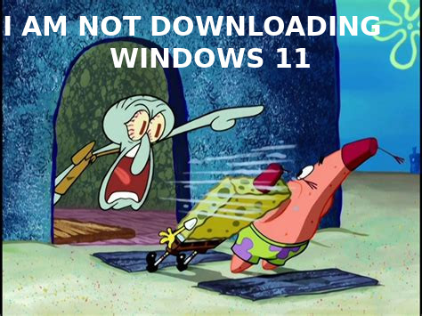

Welcome To the E-Dog Homepage!
A slideshow
1 / 3

Calvin being a smart aleck on a test (wow)
2 / 3

In some way, this might actually be true.
3 / 3

Looks like Putin
If you want to explore this webpage, click on the links below:
If you want to look at even more weird links, click here.
E-Dog | © E-Dog 2022 | Readme | E-Dog | Videos | Try Our MacOS 7.5.5 Simulator